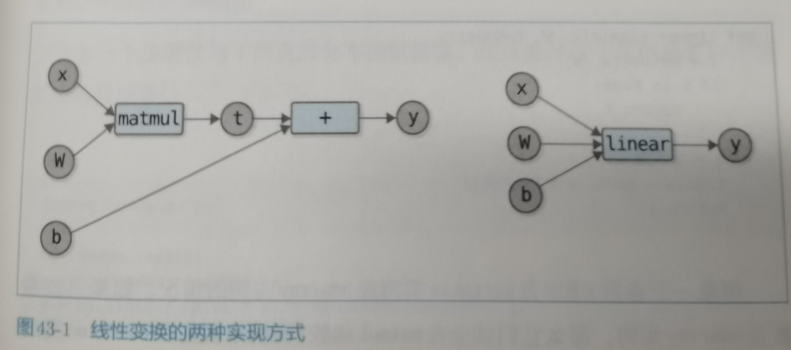

43.神经网络
43.1 DeZero中的linear函数
我们当前执行的线性变换是这样的
左侧是我们当前的执行,存在问题是有一个中间变量t,然后我们计算反向传播的时候t压根就不需要,所以这是浪费的,需要立即删除,另外一个方法就是按照右图的实现.

线性函数的实现代码
43.2 非线性数据集
非线性的数据集
43.3 激活函数和神经函数
线性变换对输入数据进行线性的变换.神经网络则对线性变换的输出进行非线性的变换.这种非线性变换叫做激活函数,典型的激活函数有ReLU和sigmoid函数.
sigmoid实现
43.4 神经网络的实现
神经网络以 线性变换->激活函数->线性变换->激活函数->...的逻辑计算,一个线性变换+一个激活函数的变换称为层layer,具有N个执行线性变换带有参数的层,叫做N层神经网络.